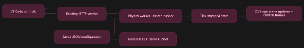
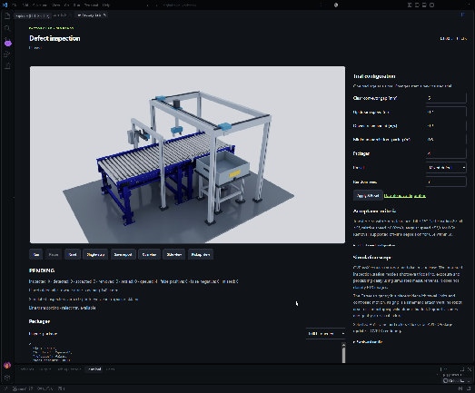
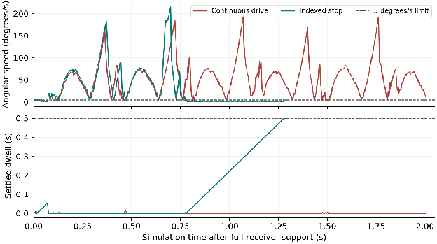
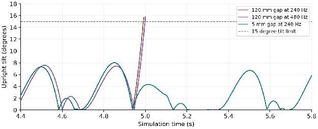
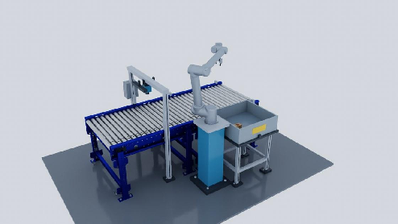

Article
Build and Debug a Simulation in VS Code with GPT-6 Astra and Omniverse Libraries #
Started with one box crossing a conveyor gap. Ended with a robot picking and sorting defects.
When a simulation fails, I usually end up moving between the scene, the code, and the logs to figure out why. For this experiment, I wanted those pieces together in VS Code: change a parameter, run the simulation, see what happened—preferably without losing the window I was just looking at.
I started with a small test: move a box between two conveyor sections and see where things go wrong. Then I added defect inspection and a robotic gripper to take the bad boxes off the line. By the end, the robot could pick up and put away three different rejects. Along the way, I had to get a box to settle down and find another one the gripper could actually hold.
I used Astra in Codex with the NVIDIA Skills plugin. This project crosses the extension, Python backend, USD scene, controller, and tests, and I wanted help carrying the work across those files without explaining the whole setup again each time. OpenAI’s Astra announcement describes improvements in coding, visual judgment, and following a changing task. This experiment seemed like a good place to try them out.
First tell it what you need #
Before asking for code, I asked Astra to inspect the workspace. Which libraries are installed? How are tests run? Is there already a viewer or configuration format to reuse? Please look before building me another one.
I also wanted to see the plan and proposed tests before implementation. Here’s the part of the request that set up the application:
Use ovphysx for physics, ovstage for scene updates, and ovrtx for rendering, and SimReady Foundation for OpenUSD requirements. Keep the simulation runner separate from the editor UI, with the same saved configuration usable for interactive and headless runs. Provide run, pause, reset, and single-step controls. Make gap and speed configurable.
A couple of other boundaries helped: download only the assets we need, skip the whole warehouse, and start with a robot placeholder. I wanted to understand one little conveyor cell before giving it more things to bump into.
Build the controls you will need when it breaks #
The existing extension built from another project using ovrtx and an HTTP service gave us a front end to build on. A separate Python worker runs the physics at a fixed timestep and sends the measured state, labeled by tick, to the viewer. ovstage applies those transforms, and ovrtx renders them. The same runner and saved JSON work with or without the editor open.


Run, Pause, Reset, and Single-step let me stop at the interesting part and take a closer look. The panel shows gap, speeds, seed, counts, package measurements, and the current verdict. It also shows the JSON being used, so I can save a case and come back to it after I’ve forgotten which settings I changed.
Give it the skills and assets to work with #
The NVIDIA Skills plugin helped Astra find guidance for the Omniverse libraries and CAD-to-SimReady preparation. Astra worked through the code, Codex gave it access to files and commands, and the skills provided procedures to follow. The actual physics and rendering ran in the libraries.
For the conveyor and box, we used Conveyor_Belt_A61, Box_Cube_A01, and their selected dependencies from the SimReady Warehouse dataset. That came to 19 files, about 76.6 MB. Much more manageable than downloading a warehouse to test one box.
The cell has supported roller sections, an inspection station, and a reject tray. ovphysx drives the rollers and handles contact with the box; simplified collision shapes cover the fixtures. Inspection reads simulated size, damage, and offset measurements, with exposure and processing delays. There’s a camera in the scene, but we aren’t running a vision model on its images in this demo so it’s not necessary but may be useful in the future.
Bring in the robot without resizing it #
Next came the project’s UR10 arm and Robotiq 2F-85 gripper. The CAD-to-SimReady workflow reused the existing STEP and rig so we were able to easily convert to USD with the NVIDIA skill. I asked it to preserve the source files and dimensions and to write down any missing properties or estimates. A guessed friction value is exactly the sort of thing I’ll forget until it causes trouble.
The chosen SimReady profile was Robot-Body-Runnable 1.1.0. Local structure, geometry, physics, profile, and articulation checks passed the validation test Astra ran. All 11 gripper solids passed the bounds comparison: the largest difference was 0.002050 mm, below the original 0.15 mm tessellation tolerance, which is important to note against any real world specs I might have to reference later.
Astra reported the general validator also logged 22 warnings for the gripper and 41 for the assembly. Mass, friction, drive tuning, mesh warnings, and mounting/TCP calibration still need engineering review, which tells me I need to bring in my simulation team to address this.
Check what is moving the box #
Before tuning anything, I wanted a simple control. Put the original box at rest on level rollers and set both commanded speeds to zero. It moved just 0.092 mm along the conveyor in 15 simulation seconds, then timed out. With both drives at 0.2 m/s, it crossed onto the receiving section. Good, the contact-driven transport was doing the work we expected.
Getting across was only part of the assignment. The whole footprint had to clear the receiving boundary by 5 mm and stay below 15 degrees of tilt during transfer. Then it had two seconds to settle: supported by the receiver, tilted no more than 5 degrees, moving at no more than 0.02 m/s relative to it, and rotating at no more than 5 degrees/s. All of that had to hold for half a second.
At a 5 mm gap, the continuously driven case failed at 7.23 seconds. Its peak tilt was 8.55 degrees, comfortably below the transfer limit. It made it across, but never stayed settled long enough to pass. Watching it arrive would have been a pretty convincing demo if I hadn’t checked the rest of the test.

The inspection cell already had an indexed policy: stop the rollers at the inspection point, let the box settle against the stopped receiver, then send a healthy box on its way. Using that policy passed, with 8.44 degrees of peak tilt and the full half-second dwell. The original dimensions, 1 kg mass, 5 mm gap, and pass criteria all stayed put. We gave the box time to stop. It will be important to rerun this again with the validated mass and friction specs another time and see how it differs.
Keep the runs that did not work #
I tried wider gaps too. At 0.2 m/s, both 50 mm and 120 mm gaps exceeded the 15-degree tilt limit. For the 120 mm gap, I repeated the run at 480 Hz instead of 240 Hz. It still failed: at 5.0000 seconds rather than 4.9917, with peak tilt at termination of 15.79 rather than 15.65 degrees.

That gave us a reason to keep looking at the support geometry. It didn’t prove a bad collision mesh, and two timesteps aren’t enough to establish convergence. I kept the 5 mm gap and tried the indexed stop at a different speed, then at lower and higher friction. Here’s what happened:
| Condition at 5 mm gap | Continuous drive | Indexed stop |
|---|---|---|
| 0.20 m/s; friction 0.6 / 0.5 | Fail: settling timeout | Pass; peak tilt 8.44° |
| 0.35 m/s; friction 0.6 / 0.5 | Fail: settling timeout | Pass; peak tilt 1.89° |
| 0.20 m/s; friction 0.4 / 0.3 | Fail: settling timeout | Pass; peak tilt 3.72° |
| 0.20 m/s; friction 0.8 / 0.7 | Fail: settling timeout | Pass; peak tilt 7.78° |
The friction pairs are static / dynamic coefficients. All eight runs above used the same original box and 1 kg mass at 240 Hz. Every indexed case held the settled state for half a second. That’s a useful result for these conditions and helps me identify that friction and peak tilt don’t play such a big role in the success of the conveyor-transfer as I may have thought. The wider gaps also failed, which comes as a no-brainer but it’s important to test every condition in a stress test experiment like this.
Find a box the gripper can actually hold #
Adding the robot brought up a more basic problem. The original box was about 105.72 × 105.19 × 105.25 mm. The Robotiq opens to 85 mm. I had given the gripper a box it couldn’t fit around. The tool stopped the oversized reject with tool_workpiece_incompatible, which was a fair assessment and sent me back to my Astra chat to follow up with a solution.
So I asked for a compatible workpiece. The new test variant is 70 mm across the jaws, with the original travel length and height and an estimated mass of 0.25 kg. Its undersized defect is 52.5 mm wide. This is a separate, labeled scene variant for the pickup test. The source files are untouched, the robot stays at its original scale, and all the transfer results above still use the original box.
The first pickup attempts needed some adjustments too. The original mount couldn’t reach the approach pose. Going too deep brought the gripper knuckles into contact with the box, and lowering into the original tray brought the forearm into the pedestal. We moved the robot origin to [0, −0.9, 1.0] m, set the tray support height to 0.78 m, and used a pinch near the top of the box. The higher pinch also cleared the knuckles on the narrower defect. I understand these are all very precise test specifications and don’t account for the real-world conditions the gripper may experience with a box but at least it gives us somewhere to start.

I steered the workpiece choice and kept the CAD dimensions fixed. Astra carried those decisions through the controller, configuration, panel, and tests. Unexpected contact still stops the run, so the next awkward pose has somewhere to show up.
Make sure the robot really picked it up #
For a pickup to count, both opposing inner fingers need more than 0.05 N of contact force for 0.1 seconds. Then the box has to lift at least 60 mm clear of the rollers. Slip over 15 mm, or loss of either finger’s contact for 0.15 seconds, fails the run. Those forces come from native contact impulse and timestep, so they aren’t calibrated hardware sensor readings since we didn’t include any sensor data in this experiment.
The box stays dynamic the whole time. We don’t attach it to the gripper in code or switch off gravity to help it along, we want to keep this physics accurate. After release, it has to be inside the tray, fully off the line, and supported, with the velocity limits held for half a second within three seconds. Here are the four-package results:
| Package | Disposition | Maximum measured grasp slip |
|---|---|---|
| Healthy | Accepted at outfeed | Not grasped |
| Surface damage | Picked and settled in tray | 0.757 mm |
| Undersized | Picked and settled in tray | 0.409 mm |
| Misaligned | Picked and settled in tray | 0.669 mm |
In this run, one healthy box went through, three rejects settled in the tray, and none were misclassified or missed. The run passed at tick 28,222: 117.6 simulation seconds at 240 Hz. We admit one box at a time here, so of course this simulation doesn’t account for multiple boxes coming down the line at once.

What the GPU and physics engine added #
The GPU on my machine aided in the ovrtx render of the conveyor and robot on an NVIDIA RTX PRO 6000 Blackwell Workstation Edition, while ovstage kept the displayed poses in sync with the measured state. For the baseline and pickup runs, ovphysx ran the physics on the CPU at 240 Hz. So the GPU was doing the rendering but wasn’t necessary for this small scale simulation.
I could have animated a box following the gripper, but that wouldn’t tell me whether the fingers could hold it so ovphysx was crucial to this experiment. With gravity, friction, contacts, and articulated joints in the simulation, the pickup had to work under the chosen physical model. The wider-gap failures and the box that crossed but wouldn’t settle were useful findings that could only be tested with accurate physics simulation. A scripted success would have skipped right past them and not given me useful reports for when I want to consider bringing this into a physical robot.
The development benefit was having that physics available as a USD-native library I could call from Python, without bringing a full Omniverse Kit application into the workflow. I could spend my effort on the inspection rules, controls, and tests instead of writing a contact solver or building a bridge to a separate simulation application. Another physics engine could also do this job; ovphysx fit the USD scene and ovstage integration I was already using.
ovphysx also supports GPU simulation and batched environments, which gives me another option as the experiment grows. Environment cloning lets me create multiple copies of a setup, and GPU execution provides a way to process physics work in parallel. That’s useful when one conveyor test turns into a whole collection of “what happens if…” questions.
For this project, I could build a batch that varies box mass, friction, starting position, or gripper timing. Does the pickup still work when the box arrives slightly crooked? How much does a heavier box change the result? I could collect the outcomes without rendering every run, then bring the interesting failures back into the viewport. Nobody needs to watch every successful box go by.
The potential payoff is getting through more test conditions in the same amount of time and finding combinations I wouldn’t think to try manually. That broader coverage could help me catch a design that only works under very friendly conditions. My current physics runs use the CPU, so GPU batching would be a next step to benchmark. The actual speedup would depend on the scene, batch size, and overhead of moving and recording the results.
Why this workflow worked for me #
The finished integration passed 28 contract and native tests: 10 for the robot integration and 18 kept from the placeholder version. Astra used checks covering the panel, run/pause/single-step, reset, and a full pickup and deposit, with zero page errors. I wanted to know the buttons worked too, not just the code behind them.
Saving the settings and measurements from each run let me come back to a failure after closing the viewport, which is important to scaling these tests with other teams. And when I changed something, I could check it against the earlier result instead of relying on memory. Very helpful when yesterday’s experiment starts to blur into today’s.
There’s more to check before taking this to hardware: actual carton mass and crush strength, friction and pad compliance, mounting and TCP calibration, actuator limits, and paths beyond the three first-row tray slots we tested. The simulation uses rigid contacts and simplified fixtures, and detection reads injected defects rather than recognizing them in images. Those are good places to bring in someone who knows the physical system.
Astra was vital to this workflow because the assignment kept growing. We started with a box crossing a gap and ended up checking whether a Robotiq could pick it up without hitting the furniture. Each change touched several parts of the project. Astra helped follow those connections, investigate the failed runs, and carry the changes through the scene, controller, and tests. I could steer the design without explaining the whole project again every time we opened another file or rewriting the entire code myself. That’s the part I’d want to keep using on the next problem, and I can do that more quickly with AI in the loop.
Omniverse libraries made it possible to put that workflow inside VS Code. ovphysx handled physics in the simulation worker, ovstage applied the measured scene updates, and ovrtx rendered the viewport. I could build the controls around the test I wanted to run, right beside the code I was changing without leaving windows. Change a setting, watch the box, pause when something looks wrong, and inspect the measurements. The same saved configuration also ran headlessly, so I could check a batch of cases without watching every box go by.
That combination is what made this useful for me: Astra helped me build and debug across the project, and the libraries let me bring the simulation into my everyday editor. If you’re trying something similar and want to learn to do this yourself, bring your questions to GTC Berlin’s digital twin training and vision AI sessions. I’ll happily start with one box. There’s plenty to learn before adding the warehouse.
Explore GTC Berlin
GTC Berlin training
·
GTC Berlin vision AI sessions